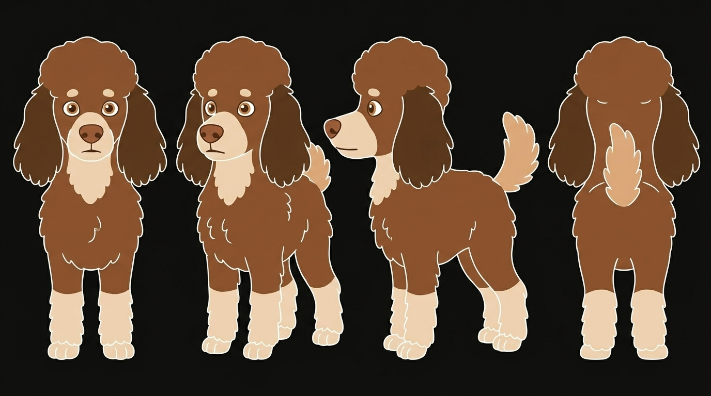
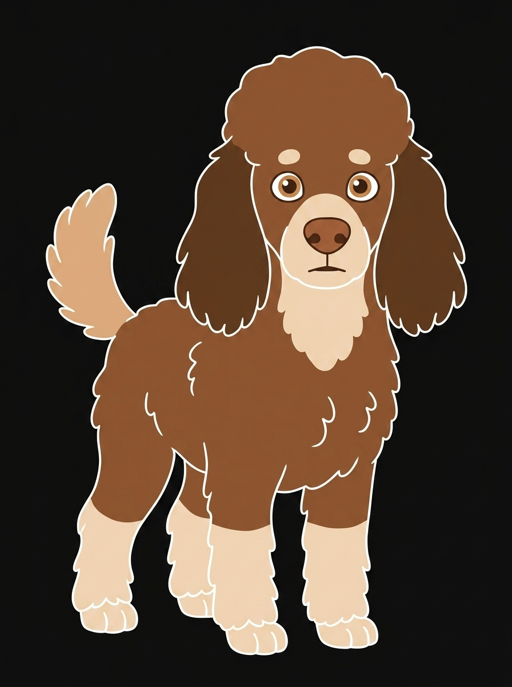
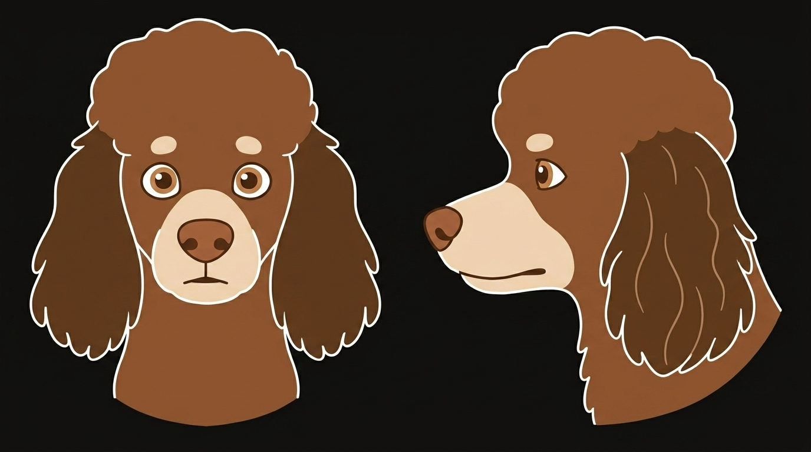
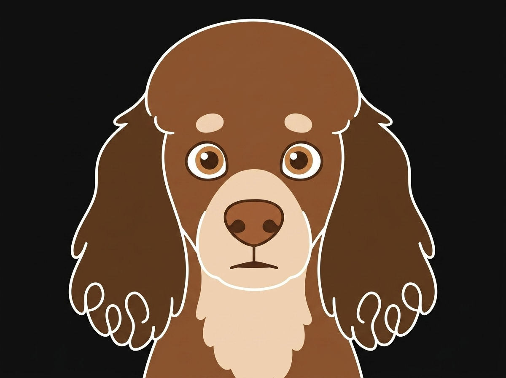
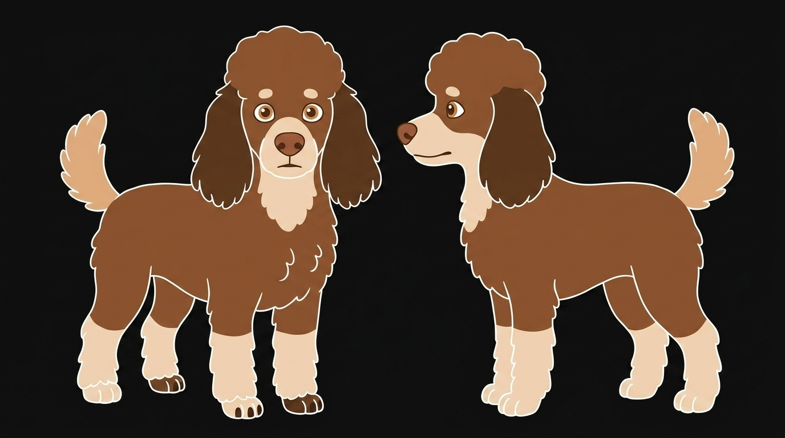

Backlog item 0.2, drawn to the character bible's model-sheet section. Adolescent
proportions, medium coat, single-weight white line, flat fills from the biscuit ramp.
Every panel is a generated draft (Nano Banana via agy) and is held
provisional until the owner accepts it against the bible; the
provisional tag marks what the closing shoot (item 0.1) still has
to close.
Front, three-quarter, profile, rear, at one scale. A square compact dog, head carried close, ears to the jaw. Nothing in the corpus measures her, so the ratios here are the bible's bounds, not measurements; the rear view's rump and back are body colour because the hindquarter markings are unverified; the tail is carried up and loosely curved by provision.


A circle with a stub: domed skull, short blunt muzzle, soft stop. Ears set low at eye level, two lobes to the jawline, the darkest value on her. Topknot held clear of the eyes. The profile rests on a single filtered frame in the corpus and is flagged until the shoot confirms it.

The eyes are the face. Round, wide-set, open, level, on the viewer; amber iris, separate dark pupil, liver rim; the two brow pips level above them. Everything else is posture. Shown at hero size and at the minimum the bible permits, 180 × 135 — below that, only the mark appears.


Skull, ear leathers, back, flanks and rump are body colour. Until the shoot, nothing above the hock is cream. The adolescent foot is drawn from puppy frames and flagged.
Every fill is one flat token from the biscuit ramp in src/app.css; the line is
currentColor. No value is mixed, lightened or shaded.
| Part | Token | Value | |
|---|---|---|---|
| Body: skull, back, flanks, rump, legs above the stocking | --biscuit-3 |
#8a5230 |
|
| Ear leathers | --biscuit-2 |
#6b3f22 |
|
| Markings: muzzle band, brow pips, bib, stockings, feet | --biscuit-7 |
#efd3b4 |
|
| Tail plume | --biscuit-6 |
#dda97b |
|
| Nose leather | --biscuit-4 |
#a9663b |
|
| Iris provisional — amber value | --biscuit-5 |
#c4834e |
|
| Pupil and paw pads | --biscuit-1 |
#3d2313 |
|
| The line: contour, curl loops, nostrils, mouth, toes | currentColor |
--text (white on dark, near-black on light) |
One weight per asset and the same weight on every asset: 2 user units on the 240 × 180 stage,
which is 1.5 px — the interface's --rule-w-strong, drawn above each specimen — at
the minimum size and scales with the drawing. She is a print, not a UI rule: at hero size the
line is proportionally the same, not thinner.
The seven postures the backlog's first pose set draws from, each on the shared 4:3 stage. The face is the same in every one that shows it; only posture changes. The mouth opens at a run and a roll because a running or rolling dog's does, and that is posture, not expression. None of the seven exists yet: the image model's quota ran out after the panels above were drawn, so these slots are briefs, not drawings, until it resets.
prompts/panels.txt.
prompts/panels.txt.
prompts/panels.txt.
prompts/panels.txt.
prompts/panels.txt.
prompts/panels.txt.
prompts/panels.txt.
--biscuit-5 is the ramp's nearest step to
amber; if it reads orange here, one amber token is proposed.
currentColor and token fills, and this sheet fixes what they draw, not how they
are built.